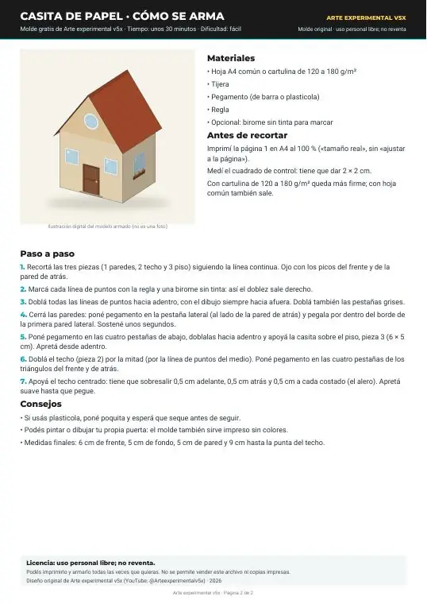

Moldes › Molde de casita de papel

Molde para imprimir pendiente
Molde de casita de papel
Molde original en A4 (2 hojas) con piezas para recortar, doblar y pegar, más la hoja de instrucciones. Video: próximamente.
Vista previa del PDF


Medidas
| Frente y fondo | 6 cm |
|---|---|
| Costados | 5 cm |
| Alto de pared | 5 cm |
| Pico del techo | 4 cm |
| Techo | 5 cm de pendiente + 0,5 cm de alero |
| Piso | 6 × 5 cm |
| Casita armada | 6 × 5 cm de base, 9 cm de alto |
Materiales
- Hoja A4 común o cartulina de 120 a 180 g/m²
- Tijera
- Pegamento (de barra o plasticola)
- Regla
- Opcional: birome sin tinta para marcar
Antes de recortar
Imprimí en A4 al 100 % («tamaño real», sin «ajustar a la página») y medí el cuadrado de control: tiene que dar 2 × 2 cm.
Paso a paso
Paso 1
Recortá las tres piezas (1 paredes, 2 techo y 3 piso) siguiendo la línea continua. Ojo con los picos del frente y de la pared de atrás.
Paso 2
Marcá cada línea de puntos con la regla y una birome sin tinta: así el doblez sale derecho.
Paso 3
Doblá todas las líneas de puntos hacia adentro, con el dibujo siempre hacia afuera. Doblá también las pestañas grises.
Paso 4
Cerrá las paredes: poné pegamento en la pestaña lateral (al lado de la pared de atrás) y pegala por dentro del borde de la primera pared lateral. Sostené unos segundos.
Paso 5
Poné pegamento en las cuatro pestañas de abajo, doblalas hacia adentro y apoyá la casita sobre el piso, pieza 3 (6 × 5 cm). Apretá desde adentro.
Paso 6
Doblá el techo (pieza 2) por la mitad (por la línea de puntos del medio). Poné pegamento en las cuatro pestañas de los triángulos del frente y de atrás.
Paso 7
Apoyá el techo centrado: tiene que sobresalir 0,5 cm adelante, 0,5 cm atrás y 0,5 cm a cada costado (el alero). Apretá suave hasta que pegue.
Las ilustraciones de los pasos están en la última hoja del PDF (vista previa arriba).
Consejos
- Si usás plasticola, poné poquita y esperá que seque antes de seguir.
- Podés pintar o dibujar tu propia puerta: el molde también sirve impreso sin colores.
- Medidas finales: 6 cm de frente, 5 cm de fondo, 5 cm de pared y 9 cm hasta la punta del techo. Licencia: uso personal libre; no reventa. Podés imprimirlo y armarlo todas las veces que quieras. No se permite vender este archivo ni copias impresas. Diseño original de Arte experimental v5x (YouTube: @Arteexperimentalv5x) · 2026 Arte experimental v5x · Página 2 de 2
Video
Video próximamente.